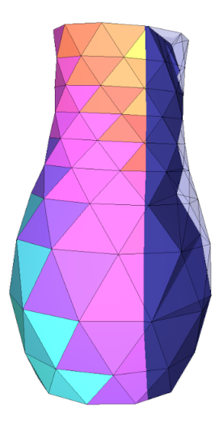
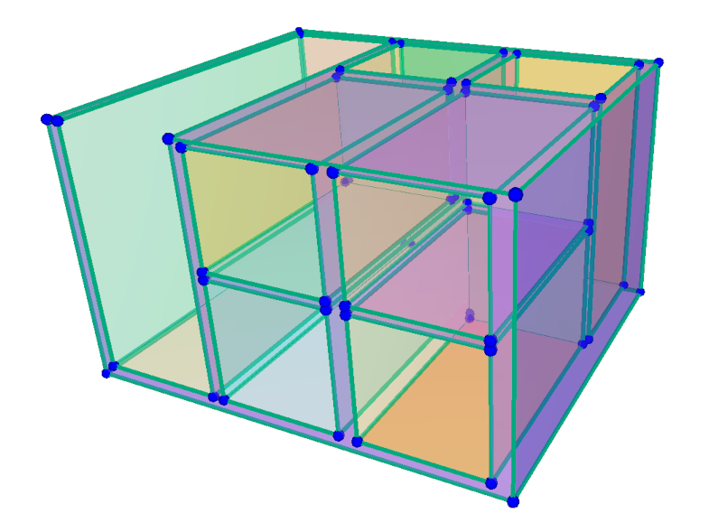
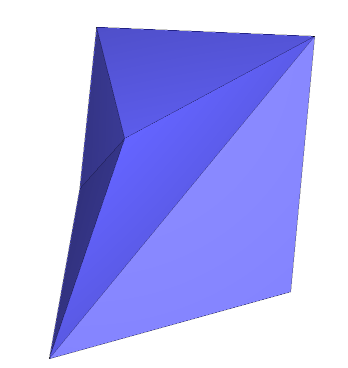
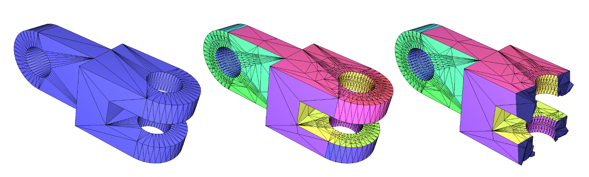
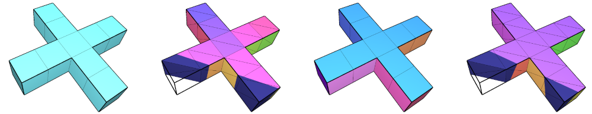

|
CGAL 6.1 - 3D Constrained Triangulations
|
Loading...
Searching...
No Matches
|
CGAL 6.1 - 3D Constrained Triangulations
|

This package implements the construction of a 3D constrained Delaunay triangulation, conforming to the set of faces of a Piecewise Linear Complex. The set of input polygonal constraints given as a PLC is meant to be represented as a sub-complex of the triangulation.
For any Piecewise Linear Complex (PLC) in 3D, the algorithm builds a constrained Delaunay triangulation conforming to this PLC. The constrained triangulation does not always exist, and it may be necessary to add Steiner vertices to the PLC to make it tetrahedralizable.
The problem is described by Cohen-Steiner et al [2], and by Si [7].
In this section, we define the main concepts that have to be understood to use this package.
A Piecewise Linear Complex (PLC) is the 3-dimensional generalization of a planar straight-line graph. It is a finite set of vertices, edges, and polygons (facets) that satisfies the following properties:
The polygons (facets) can be non-convex, have holes, and as many boundary segments as needed.

Figure 49.1 A Piecewise Linear Complex, made of planar faces, connected by edges and vertices.
The goal of the algorithms developed in this package is to compute a constrained Delaunay mesh containing a given set of polygonal constraints in 3D as sub-complex. See package 3D Triangulations for more details on Delaunay triangulations.
A triangulation is a Delaunay triangulation if the circumscribing sphere of any simplex of the triangulation contains no vertex in its interior. A constrained Delaunay triangulation of a PLC is a constrained triangulation which is as much Delaunay as possible, given that some facets are marked as constrained. More precisely, a triangulation is constrained Delaunay if for any simplex \(s\) of the triangulation, the interior of its circumscribing sphere contains no vertex of the triangulation that is visible from any point of the interior of the simplex \(s\). Two points are visible if the open line segment joining them does not intersect any polygon of the PLC, with the exception of polygons that are coplanar with the segment.
In 3D, constrained triangulations do not always exist. It can be shown using the example of the Schönhardt polyhedra [4], [1], that requires the addition of Steiner vertices to be tetrahedralizable (see Figure Figure 49.2).

Figure 49.2 A Schönhardt polyhedron.
Shewchuk [5] showed that for any PLC, there exists another PLC that is a refined version of the original one, that admits a constrained Delaunay triangulation. The refined PLC is obtained by adding Steiner vertices on the input edges and facets, and the constrained triangulation built on this PLC is called a conforming Delaunay triangulation.
The algorithm implemented in this package is based on the work of Hang Si [6], [3]. Steiner vertices are added on input edges and input facets of the PLC to make it tetrahedralizable.
Figure Figure 49.3 shows an example of a conforming constrained Delaunay triangulation constructed from a PLC.

Figure 49.3 Left : PLC (360 vertices); Middle : CCDT (2452 vertices); Right : the same CCDT seen with cutplane.
This package provides one main class Conforming_constrained_Delaunay_triangulation_3 that represents a 3D conforming constrained Delaunay triangulation. The class is templated by the geometric traits class and the underlying triangulation class. The other classes that are provided are secondary classes that define the vertex and cell types and metadata that constitute the triangulation.
Some helper constructor functions, like make_conforming_constrained_Delaunay_triangulation_3(), are provided to create a Conforming_constrained_Delaunay_triangulation_3 object.
The following example demonstrates how to use the helper constructor function make_conforming_constrained_Delaunay_triangulation_3() to create a conforming constrained Delaunay triangulation from a given PLC.
File Constrained_triangulation_3/conforming_constrained_Delaunay_triangulation_3.cpp
It is also possible to create a conforming constrained Delaunay triangulation from a polygon soup, i.e., a set of polygons for which the connectivity is not known a priori. This example demonstrates how to build such a triangulation.
File Constrained_triangulation_3/conforming_constrained_Delaunay_triangulation_3_from_soup.cpp
When the user knows a priori the set of patch ids that he wants to attach to faces, this information can be used and kept valid through the construction of the conforming constrained Delaunay triangulation.
The following example demonstrates how to detect surface patches separated by sharp edges and use this surface segmentation in the tetrahedrization process.
When this parameter is used, the 3D triangulation constrained faces indices (available with face_constraint_index() in Conforming_constrained_Delaunay_triangulation_cell_data_3) are set to the corresponding patch ids from this map. When it is not used, the face indices are set to different indices for each input facet.
File Constrained_triangulation_3/conforming_constrained_Delaunay_triangulation_3_fpmap.cpp
Figure Figure 49.4 shows the input and output of this triangulation construction example.

Figure 49.4 (Left) Input PLC; (Middle-left) The corresponding conforming constrained Delaunay triangulation with one patch per input face; (Middle-Right) Input PLC segmented according to sharp edges; (Right) The corresponding conforming constrained Delaunay triangulation using the segmentation.
Once the triangulation is built, it is possible to remesh it using the CGAL::tetrahedral_isotropic_remeshing() function from the Tetrahedral Remeshing package to improve the quality of the mesh or adapt it to a given sizing field.
The following example shows how to remesh a conforming constrained Delaunay triangulation.
File Constrained_triangulation_3/remesh_constrained_Delaunay_triangulation_3.cpp
The first version of this package was implemented by Laurent Rineau, and published in 2025 in CGAL 6.1. It is based on the theoretical foundation provided by Hang Si's work on meshing algorithms [6], [3].